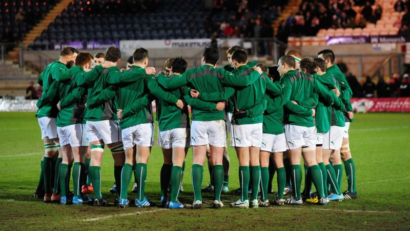

Three Changes Made To Ireland Under-20 Team
25 Feb 2018
Head coach Noel McNamara has named the Ireland Under-20 team, sponsored by PwC, to face Wales at Donnybrook in Friday's U-20 Six Nations clash (kick-off 7.15pm).
There are three changes to the side that defeated Italy 38-34 a fortnight ago. In the pack, Ronan Kelleher has recovered from the illness that forced him out of the Italy game, rejoining props Jordan Duggan and Jack Aungier in the front row. Cormac Daly, one of the try scorers against the Italians, and Jack Dunne continue their second row partnership and the back row is also unchanged, with Sean Masterson, Matthew Agnew, who made his debut last time out, and Jack O'Sullivan again lining out together.
Scrum half Jonny Stewart returns to the side following back-to-back appearances for Ulster as a replacement. He reforms his half-back partnership from the France match with Harry Byrne, who has kicked six conversions and a penalty in the tournament. James Hume will win his first Ireland U-20 cap, partnering fellow Ulster Academy member Angus Curtisin midfield. Hume made a try-scoring bow for Banbridge in the Ulster Bank League last Saturday, on his return from a leg fracture in the summer. Hume's inclusion at outside centre sees Ireland U-20 captain Tommy O'Brien move to the right wing. He forms a new back-three combination with James McCarthy, who scored three tries in the opening two rounds, and full-back Michael Silvester.
On confirmation of the matchday 23, Noel McNamara said: "We are progressing well as a team and we have been building week on week. We had a good hit-out against the senior squad in Athlone last week and the players have gone well in training since the Italy game. "Wales bring a new challenge and it is one that the players are very much looking forward to. We took our foot off the pedal in the second half against Italy, so we'll be looking for a more sustained performance on Friday night." The Ireland Under-20s' home matches at Donnybrook are again sponsored by Electric Ireland, and Friday's encounter will be broadcast live on RTE Two, with coverage beginning at 7pm. Ireland U-20 tickets are available on www.ticketmaster.ie.
IRELAND UNDER-20 Team & Replacements (v Wales Under-20s, 2018 Under-20 Six Nations Championship, Donnybrook, Friday, February 23, kick-off 7.15pm):
Player/Club/Province/Caps- 15. Michael Silvester (Dublin University/Leinster) 6
- 14. Tommy O'Brien (UCD/Leinster) (capt) 7
- 13. James Hume (Banbridge/Ulster) *
- 12. Angus Curtis (Queen's University/Ulster) 2
- 11. James McCarthy (UL Bohemians/Munster) 2
- 10. Harry Byrne (UCD/Leinster) 2
- 9. Jonny Stewart (Queen's University/Ulster) 11
- 1. Jordan Duggan (Naas/Leinster) 6
- 2. Ronan Kelleher (Lansdowne/Leinster) 9
- 3. Jack Aungier (St. Mary's College/Leinster) 2
- 4. Cormac Daly (Clontarf/Leinster) 2
- 5. Jack Dunne (Dublin University/Leinster) 2
- 6. Sean Masterson (Corinthians/Connacht) 6
- 7. Matthew Agnew (Ballymena/Ulster) 1
- 8. Jack O'Sullivan (UCC/Munster) 2